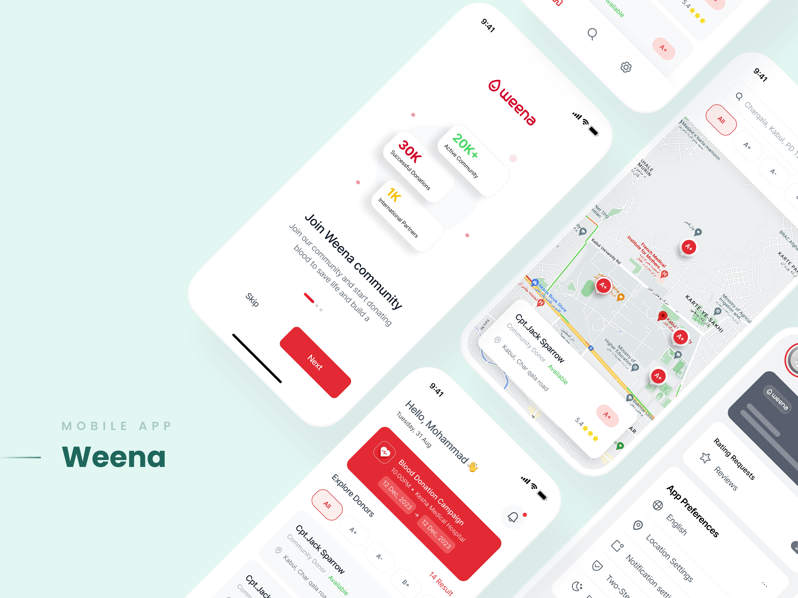

Module 1.1 Blog Post
Model-Based Systems Thinking
In today’s digital world, systems are becoming increasingly complex, especially as technology integrates across platforms, users, and environments. Designing and managing these systems requires more than focusing on individual components—it requires understanding how everything works together. This is where systems thinking becomes essential. Systems thinking allows engineers and designers to analyze relationships, interactions, and patterns within a system rather than viewing parts in isolation.
What is Systems Thinking?
Systems thinking is an approach that focuses on understanding a system as a whole by analyzing how its parts interact and influence one another. Instead of breaking systems into isolated components, systems thinking emphasizes relationships, feedback loops, and patterns over time.
In digital environments, this is especially important because systems are interconnected. A change in one area can impact performance, usability, and even security. According to Blanchard and Fabrycky (2011), systems thinking helps engineers manage complexity and ensures all components work together effectively.
Systems Thinking vs. Linear Thinking
Traditional linear thinking follows a simple cause-and-effect model where one action leads to one result. While this works for simple problems, it fails in complex systems where many factors interact.
Systems thinking recognizes that systems are dynamic. Outputs can influence future inputs, creating feedback loops. Johnson (2010) explains that users interact with systems in unpredictable ways, which makes it important to consider human behavior in system design. For example, in a mobile banking app, systems thinking would require designers to consider how user interface design, backend systems, security, and user behavior all interact. A change in one area, such as security authentication, can impact user experience and system performance.
Why Linear Thinking Falls Short
Traditional linear thinking most of the time assumes problems can be solved step-by-step without considering feedback loops or unintended consequences. However, modern digital systems are highly interconnected, making this approach ineffective for complex environments.
Model-Based Systems Thinking (MBSE)
Model-Based Systems Thinking (MBSE) uses visual models such as diagrams and simulations to represent systems instead of relying only on written documentation. This makes complex systems easier to understand and analyze.
Benefits of Model-Based Systems Engineering
MBSE improves communication among stakeholders by using visual models instead of lengthy documents. It reduces errors, improves system consistency, and allows teams to test ideas before implementation. According to Johnson (2010), modeling helps designers anticipate how users will interact with systems in real-world scenarios.
According to INCOSE (2023), MBSE improves communication among stakeholders and helps teams identify problems early. It allows teams to test scenarios before implementation, reducing risk and improving efficiency.
Why MBSE is Important
According to INCOSE (2023), MBSE improves communication among stakeholders and helps teams identify problems early. It allows teams to test scenarios before implementation, reducing risk and improving efficiency.
Why MBSE Matters in Cybersecurity
In cybersecurity, MBSE helps professionals visualize system vulnerabilities and understand how attacks may spread across interconnected components. By modeling threats and defenses, organizations can better prepare for risks and design more secure systems.
Jablonski (2020) explains that user experience depends on usability, performance, and consistency. MBSE helps designers consider all these factors together, ensuring systems are both functional and user-friendly.
Conclusion
Systems thinking and MBSE are essential for designing modern digital systems. By understanding how components interact and using models to guide development, organizations can build more efficient, reliable, and secure systems. As technology continues to evolve, these approaches will become even more critical.
Module 1.2 Blog Post
Thinking in Life Cycles
In systems engineering, building a system is not just about creating a product—it is about guiding that system through a structured process known as the system life cycle. A system life cycle includes all stages of a system’s development, from initial concept and design to implementation, maintenance, and eventual retirement. Understanding life cycle models is essential because it allows engineers and designers to create systems that are efficient, adaptable, and sustainable over time (Holt, 2019).
Different life cycle models provide different approaches to system development. The most common models include the linear, iterative, and incremental life cycle models. Each model has its own strengths and weaknesses, and choosing the right one depends on the complexity of the system and the needs of the organization.
What is the System Development Life Cycle?
The system development life cycle (SDLC) is a structured process used to design, develop, and maintain systems. It typically includes stages such as planning, design, development, testing, deployment, and maintenance. Each stage plays a critical role in ensuring that the system meets user needs and functions properly.
According to Blanchard and Fabrycky (2011), the life cycle approach helps engineers manage complexity by breaking systems into manageable phases. This allows teams to evaluate progress, identify issues early, and make necessary improvements before moving forward. Without a structured life cycle, systems may become disorganized, inefficient, or prone to failure.
Linear Life Cycle Model
The linear life cycle model, also known as the waterfall model, follows a step-by-step process where each phase must be completed before moving on to the next. This model is simple and easy to understand, making it useful for projects with clearly defined requirements.
One advantage of the linear model is its structured approach. Since each phase is completed in order, it is easier to manage and track progress. However, a major disadvantage is its lack of flexibility. Once a phase is completed, it is difficult to go back and make changes. This can be problematic in modern systems where requirements often change over time.
Iterative Life Cycle Model
The iterative life cycle model focuses on repeating cycles of development, testing, and improvement. Instead of completing the entire system at once, developers create a basic version and then refine it through multiple iterations.
This model allows for continuous feedback and improvement, making it more flexible than the linear model. Engineers can identify and fix problems early, reducing the risk of major failures. However, iterative models can require more time and resources, as multiple cycles are needed to achieve the final product.
Incremental Life Cycle Model
The incremental life cycle model builds the system in smaller parts, or increments. Each increment adds new features or functionality until the full system is complete.
One advantage of this approach is that users can begin using parts of the system early, rather than waiting for the entire system to be finished. This improves user satisfaction and allows for early feedback. However, managing multiple increments can be complex, and integration between components must be carefully handled to avoid issues.
Comparing the Life Cycle Models
Each life cycle model offers a different way of approaching system development. The linear model is best suited for simple, well-defined projects where changes are unlikely. The iterative model is ideal for complex systems that require continuous improvement and user feedback. The incremental model is useful when systems can be developed and delivered in stages.
Modern digital systems often require a combination of these models. For example, a software application may use an incremental approach to release features while also applying iterative improvements based on user feedback. This flexibility is essential in today’s fast-changing technological environment.
Why Thinking in Life Cycles Matters
Thinking in terms of life cycles is important because systems do not remain static. They evolve over time due to changing user needs, technological advancements, and environmental factors. By considering the entire life cycle, engineers can design systems that are adaptable and sustainable.
The International Council on Systems Engineering (INCOSE, 2023) emphasizes that life cycle thinking helps organizations reduce costs, improve system performance, and extend the lifespan of their systems. It also supports better decision-making by allowing teams to anticipate future challenges and plan accordingly.
Real-World Application
A practical example of life cycle thinking can be seen in mobile application development. When a company releases a mobile app, it does not end with deployment. The app must be continuously updated to fix bugs, improve performance, and add new features. An iterative or incremental model is often used in this case to ensure the app remains competitive and meets user expectations.
In cybersecurity, life cycle thinking is also critical. Systems must be continuously monitored and updated to address new threats. A linear approach would not be sufficient, as security risks evolve rapidly. Instead, iterative and incremental models allow organizations to respond to threats effectively and maintain system security.
Conclusion
Understanding system life cycle models is essential for designing and maintaining modern digital systems. The linear, iterative, and incremental models each offer unique advantages and challenges, and selecting the right approach depends on the needs of the project. By thinking in life cycles, engineers can create systems that are not only functional but also adaptable, sustainable, and secure. As technology continues to evolve, life cycle thinking will remain a key component of successful system design.
Module 2.1 Blog Post
Human First: Designing with People in Mind
What Does It Mean to Design for People?
Designing for people means more than simply creating functional systems—it means understanding the way users think, behave, and interact with technology. In today’s digital world, systems are deeply integrated into everyday life, from mobile applications to websites and enterprise platforms. Because of this, the success of a system is not determined only by whether it works, but by how effectively it supports the user’s goals and experience.
Human-centered design (HCD) shifts the focus from technology to the people who use it. Instead of designing based on assumptions, developers must consider user needs, limitations, and expectations. Johnson (2010) explains that users rely heavily on patterns, familiarity, and mental shortcuts when interacting with systems. This means that even a technically perfect system can fail if it is confusing or unintuitive. Designing for people requires empathy, awareness of cognitive limitations, and an understanding of how perception and attention influence interaction.
Understanding Human-Centered Design
Human-centered design is a framework that places users at the core of the design process. According to ISO 9241-210, HCD ensures that systems are usable, accessible, and aligned with user needs through continuous evaluation and feedback. This structured approach focuses on identifying user requirements, testing designs, and improving systems over time. It is especially useful in professional environments where consistency and reliability are critical.
In contrast, the IDEO Field Guide emphasizes empathy and creativity. It encourages designers to observe users, understand their experiences, and design solutions that address real-world challenges. While ISO provides a systematic and formal process, IDEO promotes flexibility and innovation. These two approaches complement each other, showing that effective design requires both structured methodology and human insight. By combining these perspectives, designers can create systems that are both efficient and meaningful.
Comparing ISO 9241-210 and IDEO’s Approach
ISO 9241-210 offers a standardized process for human-centered design, focusing on clearly defined stages such as understanding the context of use, specifying user requirements, producing design solutions, and evaluating those solutions against user needs. This structured approach is particularly valuable in large organizations where consistency, documentation, and repeatability are essential. By following a formal process, teams can ensure that user needs are not overlooked and that design decisions are based on evidence rather than assumptions. This helps reduce errors and improves the overall quality of the final system.
One of the strengths of ISO 9241-210 is its emphasis on continuous evaluation. Instead of treating design as a one-time process, it encourages ongoing testing and refinement based on user feedback. This ensures that systems evolve alongside user expectations and technological changes. In professional environments, especially in industries such as healthcare, finance, and enterprise software, this level of structure is critical because mistakes can be costly and impact large numbers of users.
On the other hand, IDEO’s approach to human-centered design is more flexible and focuses heavily on empathy and creativity. Rather than strictly following predefined steps, IDEO encourages designers to immerse themselves in the user’s environment, observe behaviors, and identify problems through real-world interactions. This approach allows designers to uncover insights that may not be visible through structured analysis alone. For example, observing how users struggle with a product in their natural environment can reveal usability issues that would not be identified in a controlled testing setting.
IDEO’s method is especially useful for innovation because it encourages experimentation and creative problem-solving. Designers are not limited by rigid processes and can explore multiple solutions before arriving at the best one. However, this flexibility can also be a limitation in environments that require strict documentation and consistency. This is why combining ISO’s structured framework with IDEO’s empathy-driven approach often leads to the best results. Together, they demonstrate that successful design must balance organization, reliability, and deep understanding of human behavior.
The Role of Perception and Visual Hierarchy
Perception plays a major role in how users interact with digital systems because it determines how information is interpreted and acted upon. Users do not process every piece of information equally; instead, they rely on visual cues, patterns, and prior experiences to guide their actions. Johnson (2010) explains that users often scan interfaces rather than read them in detail, which means that important information must stand out clearly. If a system does not align with how users naturally perceive information, it can lead to confusion, errors, and frustration.
Visual hierarchy is the method designers use to organize content in a way that directs user attention to the most important elements first. This can be achieved through size, color, contrast, spacing, and positioning. For example, larger text is often used for headings to signal importance, while buttons are designed with contrasting colors to make them easy to identify. When visual hierarchy is applied effectively, users can quickly understand where to focus their attention and how to navigate the system without unnecessary effort.
A lack of clear visual hierarchy can significantly reduce usability. For instance, if all elements on a page look similar in size and color, users may struggle to determine what actions to take. This can lead to slower task completion and increased cognitive load. In contrast, a well-designed interface guides users naturally through the system, making interactions feel intuitive. This is especially important in high-stakes environments such as online banking or healthcare applications, where mistakes can have serious consequences.
Perception is also influenced by familiarity and expectations. Users bring prior experiences with other systems, and they expect similar patterns to be followed. This is why consistency in design is so important. When interfaces follow common design conventions, users can rely on their existing knowledge, reducing the need to learn new interactions. By understanding perception and applying visual hierarchy effectively, designers can create systems that are not only functional but also easy and efficient to use.
UX Laws in Practice
- Jakob’s Law: Users expect websites and applications to function similarly to those they already use. For example, most users expect a shopping cart icon to represent purchases. When designers follow familiar patterns, users can navigate systems more easily without needing to learn new behaviors.
- Fitts’s Law: The time required to interact with an element depends on its size and distance. Larger buttons that are placed in easy-to-reach areas improve usability. For example, mobile apps often place important buttons near the bottom of the screen for easier access.
- Hick’s Law: The more choices a user has, the longer it takes to make a decision. For example, a website with too many menu options can overwhelm users and slow navigation. Simplifying choices improves efficiency and user satisfaction.
- Miller’s Law: Users can only process a limited amount of information at once. Overloading users with too much content can lead to confusion and errors. Breaking information into smaller sections helps improve comprehension and usability.
These laws demonstrate how understanding human behavior directly impacts design decisions. By applying these principles, designers can reduce cognitive load, improve efficiency, and create more intuitive systems.
Applying Human-Centered Design in Real Systems
In real-world applications, human-centered design is essential for creating effective digital systems that users can interact with easily and efficiently. For example, an e-commerce website must guide users through multiple steps, including browsing products, selecting items, and completing the checkout process. If any part of this process is confusing or overly complicated, users may abandon their purchase. This directly impacts business performance, showing how design decisions can have real-world consequences. By applying human-centered design principles, developers can ensure that each step in the process is intuitive and aligned with user expectations.
Another example can be seen in mobile applications, where limited screen space requires careful design decisions. Designers must prioritize the most important features, ensure that buttons are easy to tap, and minimize unnecessary steps. This is where principles like Fitts’s Law become critical, as placing important buttons within easy reach improves usability. At the same time, Hick’s Law reminds designers to avoid overwhelming users with too many options, which can slow decision-making and create frustration.
Human-centered design also plays a key role in accessibility. Systems must be designed to accommodate users with different abilities, including those with visual, cognitive, or physical impairments. This includes using readable fonts, clear navigation structures, and alternative ways to interact with content. Designing with accessibility in mind not only improves usability for all users but also ensures inclusivity, which is increasingly important in modern digital environments.
In addition, real-world systems must consider user emotions and experiences. A system that is technically efficient but frustrating to use will not succeed in the long term. Designers must create experiences that feel smooth, predictable, and satisfying. This requires a deep understanding of user behavior and continuous testing and improvement. By applying human-centered design principles, organizations can create systems that not only meet functional requirements but also deliver meaningful and positive user experiences.
Why Human-First Design Matters
Human-first design is essential because it ensures that systems are not only functional but also usable and meaningful. By focusing on users, designers can create systems that align with real-world needs and expectations. Combining structured frameworks like ISO 9241-210 with creative approaches like IDEO leads to more effective and innovative solutions.
Ultimately, successful design is about understanding people. Technology continues to evolve, but the need to support human interaction remains constant. By applying principles of human-centered design, perception, and UX laws, designers can create systems that enhance user experience and improve overall effectiveness.
Module 2.2 Blog Post
Support User Thinking: Designing Systems That Work With the Human Mind
Introduction
Design is not just about how something looks—it is about how it works and how it supports the way users think. In digital systems such as mobile apps and school platforms like Canvas, users rely heavily on memory, habits, and mental shortcuts to complete tasks efficiently. When systems align with these natural thinking processes, users can navigate them easily without confusion. However, when systems ignore how people think, even simple tasks can become frustrating and time-consuming.
Usability depends on understanding cognitive processes such as memory, attention, and decision-making. Users do not carefully analyze every part of a system; instead, they scan, recognize patterns, and make quick decisions based on prior experience. This means that designers must create systems that reduce mental effort and guide users naturally. If too much information is presented at once, or if the layout is unclear, users may become overwhelmed and abandon the task entirely.
Designing systems that support user thinking requires more than technical knowledge—it requires empathy and awareness of human limitations. By focusing on how users process information, designers can create interfaces that feel intuitive, predictable, and efficient. This is especially important in both everyday applications, such as shopping apps, and structured environments like school systems, where users depend on clear and reliable interactions to complete important tasks.

Memory and Mental Models
Memory plays a critical role in how users interact with systems because it determines how easily they can recall information and complete tasks. According to Johnson (2010), users prefer recognition over recall, meaning they perform better when they can recognize options rather than remember them from memory. For example, a navigation menu that clearly displays options allows users to quickly select what they need, while a system that requires users to remember commands or steps increases difficulty and frustration.
Mental models are the expectations users develop based on past experiences with similar systems. These models help users predict how a system will behave. For instance, most users expect a shopping cart icon to represent purchases because it is a common design pattern across many websites. When systems follow these familiar patterns, users can interact with them confidently without needing additional instructions.
In both mobile apps and school systems, mental models guide user behavior. For example, students using Canvas expect assignments, grades, and course materials to be organized in predictable sections. If these elements are placed in unusual locations, users may struggle to find what they need. This increases cognitive effort and reduces efficiency. By designing interfaces that match user expectations, developers can reduce confusion and improve usability.
When designers ignore mental models, users are forced to learn new interaction patterns, which slows them down and increases errors. This highlights the importance of designing systems that align with existing knowledge. By supporting memory and leveraging familiar patterns, designers can create systems that feel natural and easy to use.

Cognitive Load and Why It Matters
Cognitive load refers to the amount of mental effort required to use a system. When users interact with digital interfaces, they must process information, make decisions, and complete tasks. If a system presents too much information at once or requires complex steps, it increases cognitive load and makes the experience more difficult. This can lead to frustration, mistakes, and even abandonment of the task.
One common example of high cognitive load is a cluttered dashboard filled with too many options, notifications, and menus. In such cases, users may struggle to determine where to focus their attention. Hick’s Law explains that as the number of choices increases, the time required to make a decision also increases. This means that simplifying options is essential for improving usability.
Reducing cognitive load involves organizing information in a clear and structured way. Designers can group related elements, use consistent layouts, and eliminate unnecessary features. For example, a well-designed school platform will display assignments, grades, and announcements in clearly labeled sections, making it easier for students to navigate. Similarly, mobile apps often use simple and clean interfaces to reduce distractions and help users complete tasks quickly.
Another important aspect of managing cognitive load is prioritization. Not all information is equally important, so designers must highlight key elements while minimizing less critical details. This allows users to focus on what matters most without becoming overwhelmed. By reducing cognitive load, systems become more efficient, intuitive, and user-friendly.
Interface Consistency
Consistency is a fundamental principle of good design because it allows users to predict how a system will behave. When elements such as buttons, menus, and layouts remain consistent across different parts of a system, users can quickly learn how to interact with it. This reduces the need for additional thinking and allows users to focus on completing their tasks.
For example, in a mobile app, if a “Submit” button always appears in the same location and uses the same design, users will know exactly where to find it each time. This creates a sense of familiarity and efficiency. In contrast, if buttons change position or appearance across screens, users may become confused and make mistakes.
Consistency is especially important in school systems like Canvas. If each course is organized differently, students may waste time searching for assignments or important information. A consistent structure across courses allows students to transfer knowledge from one class to another, making navigation easier and more efficient.
By maintaining consistency, designers reduce cognitive effort and improve user experience. It also helps build user confidence, as predictable systems are easier to understand and trust.

System Feedback
System feedback is the way a system communicates with users after they perform an action. This includes visual or auditory signals such as loading indicators, confirmation messages, and error notifications. Feedback is essential because it informs users that their actions have been recognized and processed.
For example, when a user submits an assignment on Canvas, a confirmation message reassures them that the submission was successful. Without this feedback, users may feel uncertain and attempt to repeat the action, which can lead to confusion or duplicate submissions. Similarly, loading indicators in mobile apps let users know that the system is working, preventing frustration during delays.
Good feedback is immediate, clear, and informative. It should guide users on what to do next, especially when errors occur. For instance, instead of displaying a vague error message, a system should explain what went wrong and how to fix it. This improves usability and reduces user frustration.
Effective feedback builds trust between the user and the system. When users feel confident that the system is responding correctly, they are more likely to continue using it. This makes feedback a critical component of user-centered design.
Tesler’s Law
Tesler’s Law states that every system has a certain amount of complexity that cannot be reduced. The goal of design is to manage this complexity so that it does not overwhelm users. In practice, this means simplifying interfaces while still providing necessary functionality.
For example, a food delivery app like DoorDash must handle many complex processes such as ordering, payment, and tracking delivery. However, the interface presents these tasks in a simple and organized way. This reduces the cognitive burden on users and makes the system easier to use.
Principles from Designing with the Mind in Mind
Johnson (2010) highlights several principles that are essential for usability. One key principle is recognition over recall, which emphasizes the importance of making options visible. Another important concept is the limitation of human attention. Users can only focus on a few elements at a time, so interfaces should avoid overwhelming them with information.
Habit formation is another important factor. When users repeatedly perform the same actions, they develop habits that make interactions faster and more automatic. Designers should create consistent patterns that support these habits rather than disrupt them.
Conclusion
Designing systems that support user thinking requires a deep understanding of how people process information. By considering memory, mental models, cognitive load, consistency, and feedback, designers can create systems that are intuitive and efficient. Applying principles such as Tesler’s Law and insights from Johnson (2010) ensures that systems align with human capabilities and limitations. In both apps and school platforms, good design makes tasks easier, reduces frustration, and improves overall user experience.
Module 3.1 Blog Post
Designing for Flow: How Canvas Shapes User Experience
Designing for flow in digital systems is essential for creating efficient and user-friendly experiences. Flow refers to how easily users can move through a system to complete tasks without confusion, frustration, or unnecessary effort. A well-designed interface allows users to move naturally from one step to another, while a poorly designed interface interrupts this process and creates barriers. In educational platforms like Canvas, flow is especially important because students rely on the system to access course materials, submit assignments, and manage deadlines effectively.
As a student, I have personally experienced how much design can impact productivity and stress levels. When a system is clear and easy to navigate, I can focus on learning and completing assignments. However, when the layout is confusing or disorganized, I spend unnecessary time trying to figure out where things are instead of actually doing my work. This shows that flow is not just a design concept, but something that directly affects real users and their performance. Canvas is a strong example of how design decisions can either support or disrupt the user experience.
Canvas is widely used in academic environments, making it a strong example of how interface design directly impacts user behavior. From navigating dashboards to interacting with modules and submitting assignments, every step depends on clear layout and intuitive controls. This blog examines how Canvas supports or disrupts user flow, applies key UX laws to explain design decisions, and evaluates real user experiences to highlight both strengths and weaknesses.
Interface Layout and User Flow in Canvas
The layout of Canvas plays a major role in shaping how users interact with the system and complete tasks. When I log into Canvas, I usually start at the dashboard, which displays all my courses and upcoming assignments. This initial screen is important because it acts as a central hub where I decide what to do next. If the dashboard is clear and organized, I can quickly choose a course and move forward. However, if too much information is displayed or things are not clearly labeled, it can feel overwhelming and slow down my decision-making process.
Once I enter a course, I typically navigate to the modules section. Modules are designed to organize content in a step-by-step format, which should support a smooth user flow. When modules are well-structured, I can easily follow along from one assignment to the next without confusion. For example, I might click on “Module 3,” read the instructions, access the materials, and then submit my assignment. In this situation, the flow feels natural and efficient. However, I have also experienced courses where modules are not clearly organized, and assignments are placed in unexpected locations. In those cases, I find myself clicking through multiple sections trying to locate what I need, which interrupts the flow and creates frustration.
One specific struggle I have encountered is when assignments are not labeled clearly or are buried within different tabs. There have been times when I knew an assignment existed, but I could not find it quickly because it was not placed in the correct module or had a vague title. This forced me to search through announcements, assignments, and modules repeatedly. This experience shows how poor organization can break the flow and negatively impact the user experience.
Another important design element in Canvas is the left-side navigation menu. This menu remains consistent across all courses, which is helpful because I do not have to relearn how to navigate each time I enter a different class. Over time, I have become familiar with where everything is located, such as modules, grades, and assignments. This consistency improves flow by allowing me to rely on memory and recognition instead of constantly figuring things out. As a result, I can complete tasks faster and with less effort.
It would be convinient if when submitting assignments in Canvas, users follow a specific path: starting at the dashboard, entering the course, locating the correct module, finding the assignment, and then completing the submission process. When this flow is well-organized, users can complete tasks quickly and confidently. However, if assignments are not clearly labeled or are placed in the wrong module, users may struggle to find them. This disrupts the flow and creates frustration, demonstrating how small design decisions can significantly affect user experience.

Figure 1: Canvas dashboard showing course navigation.
Applying UX Laws to User Flow
The Aesthetic–Usability Effect plays a significant role in how I perceive Canvas as a user. This principle suggests that users are more likely to view visually appealing designs as easier to use. Canvas has a relatively clean and simple layout, which makes it feel less intimidating compared to more cluttered systems. When I first open a course, the structured layout and use of spacing make it easier for me to understand where to go. Because the interface looks organized, I feel more confident navigating through it, even if I am not completely familiar with all features. This shows how visual design can influence user perception and support smoother interaction.
The Von Restorff Effect is also clearly visible in Canvas. This principle explains that items that stand out are more likely to be noticed and remembered. In my experience, due dates and announcements often stand out more than other elements. For example, when an assignment is approaching its deadline, it is usually highlighted in a way that makes it easy to notice. This helps me prioritize my work and ensures that I do not miss important tasks. Without this emphasis, it would be much harder to keep track of deadlines, especially when managing multiple courses at once.
Postel’s Law focuses on flexibility and tolerance in system design, and I have seen this in Canvas when submitting assignments. Canvas allows me to upload different types of files, such as PDFs, Word documents, and sometimes even links. This flexibility is helpful because I do not have to worry about converting files into a specific format before submitting. However, there have also been times when I was unsure if my file uploaded correctly or if I selected the right format. This shows that while flexibility improves usability, clear feedback is still necessary to maintain smooth flow and reduce confusion.

Figure 2: Canvas assignment submission interface.
Real User Experience and Flow Challenges
In real-world use, Canvas provides both effective and frustrating experiences depending on how courses are designed. From my personal experience, Canvas has provided me both smooth and frustrating interactions as well. A positive experience occurs when instructors organize modules clearly and follow a logical structure. In these cases, students can easily move from one assignment to the next, maintaining a smooth workflow and completing tasks efficiently. This demonstrates how good design supports user flow and improves productivity.
However, there are also situations where the flow is disrupted. For example, if an assignment is not placed in the correct module or is labeled unclearly, students may have difficulty locating it. This forces users to search through multiple sections, breaking the natural flow of the interface. In some cases, students may even miss deadlines because they could not find the assignment in time. This highlights how poor organization negatively impacts usability.
Another common issue involves the submission process. While Canvas generally provides a clear submission button, users are sometimes unsure whether their work has been successfully submitted. If confirmation messages are not visible enough, users may feel uncertain and attempt to resubmit their work. This creates confusion and disrupts the flow. Improving feedback visibility would help resolve this issue and create a more seamless user experience.
More into the aspect of flow that I have noticed while using Canvas is how small inconsistencies between courses can significantly impact usability. Even though the platform itself provides a standard structure, instructors have flexibility in how they organize their content. Because of this, one course might have everything clearly placed within modules, while another course might rely heavily on the assignments tab or announcements. As a student, this forces me to constantly adjust my navigation strategy depending on the course, which interrupts the natural flow of the system. Instead of building a consistent habit, I have to stop and think about where to look each time, which increases cognitive effort. This experience highlights how even a well-designed system like Canvas can lose efficiency when consistency is not maintained across different implementations.
Additionally, when multiple assignments are due at the same time, the interface can feel overwhelming. If everything looks similar and nothing stands out clearly, it becomes harder to prioritize tasks. This increases cognitive load and makes it more difficult to manage time effectively. Improving visual hierarchy and emphasis could help reduce this issue and create a smoother experience.

Figure 3: Canvas modules showing structured course flow.
Conclusion
Designing for flow is essential in creating effective digital systems, especially in platforms like Canvas. A well-structured interface helps users complete tasks efficiently, while poor design can lead to confusion and frustration. Through its layout, navigation, and use of UX principles, Canvas demonstrates both strengths and weaknesses in supporting user flow.
Designing for flow is not only about improving efficiency but also about reducing user stress and increasing confidence. As a student, I have found that when a system is predictable and easy to navigate, I feel more in control of my work and less anxious about missing important tasks. On the other hand, when the interface is unclear or inconsistent, it creates unnecessary pressure and uncertainty. This shows that design decisions have a direct impact not only on usability but also on the overall user experience and well-being. By focusing on clear structure, consistent navigation, and effective feedback, designers can create systems that truly support users in achieving their goals without unnecessary obstacles.
By applying UX laws such as the Aesthetic–Usability Effect, Von Restorff Effect, and Postel’s Law, designers can better understand how to create systems that guide users naturally. Ultimately, improving user flow enhances usability and ensures that users can achieve their goals with confidence and ease.
References
- Norman, D. A. (2013). The design of everyday things. Basic Books.
- Interaction Design Foundation. (2020). Aesthetic-usability effect.
- Interaction Design Foundation. (2020). Von Restorff effect.
- Interaction Design Foundation. (2020). Postel’s law.
Module 3.2 Blog Post
Interaction That Matters: How Canvas Uses Feedback and Responsiveness to Shape Student Experiences
When people discuss digital design, attention often gravitates toward visible elements such as color palettes, page layouts, and overall aesthetic presentation. Yet many of the most consequential design choices are those that remain largely imperceptible to users. Interaction design concerns itself with the dynamic relationship between users and systems: how interfaces respond to input, the immediacy and clarity of feedback, and the emotional texture of the user’s experience. These subtle qualities profoundly shape whether a system is perceived as efficient, trustworthy, and satisfying to engage with.
Canvas provides an excellent example of interaction design because students rely on it almost every day. As a college student, I use Canvas to access course materials, check announcements, submit assignments, review grades, and communicate with instructors. Many of these actions happen dozens of times each week. Because of this constant interaction, even small design decisions can have a major impact on productivity, stress levels, and overall satisfaction.
This blog explores how interaction patterns, responsiveness, timing, and ethical design influence the user experience within Canvas. Using concepts from Designing with the Mind in Mind and Laws of UX, I will analyze how Canvas provides feedback, manages user expectations, and creates memorable experiences. I will also reflect on my own experiences using Canvas to demonstrate how interaction design affects real users in educational environments.
Why Interaction Design Matters
Interaction design refers to communication between users and systems, it shapes how individuals perceive, interpret, and respond to digital interfaces. Each user’s action such as clicking a button, submitting a form, opening a menu, or receiving a notification constitutes an interaction that conveys information about system state and expected next steps. Effective interaction design reduces ambiguity by offering clear cues, predictable outcomes, and timely feedback. Conversely, poorly designed interactions introduce uncertainty, disrupt task flow, and heighten user frustration.
Within Canvas, interaction design plays a critical role because students often engage with the platform under time pressure and cognitive load. Stress reduces users’ tolerance for ambiguity, making clarity and responsiveness essential. A well‑designed interaction can mitigate anxiety by providing explicit instructions, intuitive pathways, and immediate confirmation of user actions. For instance, when students upload an assignment, they rely on unambiguous feedback to verify that the submission was successful. In the absence of such reassurance, users may repeatedly check or attempt to resubmit their work, expending unnecessary time and mental energy.
Johnson (2014) explains that people often rely on mental shortcuts rather than carefully analyzing every situation. Because users naturally seek simplicity, systems should communicate information clearly and consistently. Canvas supports this principle through predictable navigation and familiar interaction patterns. Students quickly learn where modules, assignments, grades, and announcements are located, allowing them to focus on learning rather than navigation.

Figure 1: Canvas course homepage displaying navigation tools, course content, and student interaction points.
Feedback and Responsiveness in Canvas
Feedback is one of the most important parts of interaction design because it tells users that the system has noticed and responded to their action. In Canvas, feedback appears in many ways, such as submission confirmations, grade notifications, loading responses, calendar reminders, and announcements. These details may seem small, but they strongly affect how students feel when using the system. If Canvas responds clearly and quickly, I feel more confident that my work was submitted correctly. If feedback is unclear or delayed, I begin to question whether the system worked the way it should.
A common example is assignment submission. When I submit an assignment in Canvas, I expect the system to clearly confirm that the file was uploaded and received. This matters especially when I am submitting close to a deadline. If the confirmation is easy to see, it reduces anxiety because I know my work is safely submitted. However, if the confirmation message is small, hidden, or unclear, I may feel the need to check again or even resubmit the assignment. This creates extra stress and interrupts the flow of the experience. Johnson (2010) explains that users depend on clear signals from systems because people do not want to guess what happened after they take action.
Responsiveness also affects trust. When Canvas loads pages quickly, opens modules smoothly, and updates grades without long delays, the system feels dependable. On the other hand, when pages load slowly or actions take too long, it becomes frustrating. As a student, I often switch between several courses, assignments, and discussion boards. If each page loads quickly, I can stay focused on my work. If the system feels slow, my attention breaks, and I may become distracted or irritated. This shows that responsiveness is not just a technical issue; it directly affects the emotional experience of the user.
The Doherty Threshold and User Productivity
The Doherty Threshold is a UX law that explains how fast system response times help users stay productive and engaged. According to Yablonski (2020), users remain more focused when a system responds quickly enough that they do not feel interrupted. This principle applies strongly to Canvas because students often use the platform while completing time-sensitive academic work. When I am moving between modules, checking assignment instructions, or uploading a file, I expect the system to respond almost immediately.
For example, during busy weeks, I sometimes need to check multiple assignment pages in different classes. If Canvas opens each page quickly, I can keep my mental focus and continue working. However, if I have to wait too long for pages to load, my attention shifts away from the task. This can make the work feel harder than it actually is. The delay breaks the flow and makes the system feel less supportive. A responsive system helps students stay engaged, while a slow system adds unnecessary friction.
This law also connects to emotional memory. Students may not remember every normal interaction with Canvas, but they often remember moments when the system slowed them down during stressful situations. If Canvas freezes while submitting an assignment close to the deadline, that negative moment can become very memorable. This is why fast response time is important not only for usability but also for user trust.

Figure 2: Canvas assignment page showing submission and feedback interaction.
The Peak-End Rule and Student Experience
The Peak-End Rule explains that people often judge an experience based on its most intense moment and how it ends. This is important in Canvas because students may not remember every small interaction, but they will remember stressful or meaningful moments. For example, submitting a major project, receiving a final grade, or seeing instructor feedback can strongly shape how a student feels about the system. Even if most of the course experience was smooth, one stressful interaction can leave a lasting impression.
In my own experience, the most memorable Canvas moments are usually connected to assignment deadlines and grade updates. When I submit a large assignment and immediately receive a clear confirmation, the experience ends positively. I feel relieved because I know the system worked. However, if I submit work and do not clearly see confirmation, the experience ends with uncertainty. That uncertainty can make the entire interaction feel worse, even if the submission was technically successful.
The Peak-End Rule also applies to grade feedback. When grades are posted clearly and instructor comments are easy to find, the experience feels helpful. But if feedback is hard to locate or unclear, it can create frustration. Canvas can support better emotional experiences by making important ending points, such as submissions and grades, clear and reassuring. This matters because students associate these moments with progress, success, and academic responsibility.
Ethical Design and Student Motivation
Ethical design is important because digital systems can influence user behavior in powerful ways. In Canvas, reminders, notifications, and alerts encourage students to complete assignments and stay engaged. These features can be helpful because they support academic success. However, designers must be careful not to overwhelm students with too many alerts or create unnecessary anxiety. Ethical interaction design should guide users without manipulating them.
Canvas is different from social media platforms because its goal is not to keep users scrolling endlessly. Instead, its purpose is to support learning, communication, and task completion. This makes ethical design especially important. Notifications should help students stay informed, but they should not create panic or pressure beyond what is necessary. For example, deadline reminders are useful because they help me plan my work. However, if every small update appeared as an urgent alert, I would likely feel overwhelmed.
Good ethical design respects the user’s attention. Johnson (2010) explains that human attention is limited, which means systems should avoid unnecessary distractions. Canvas works best when it highlights important information, such as due dates and instructor feedback, while keeping less urgent information in appropriate places. This balance helps students stay organized without feeling overloaded.
My Personal Experience Using Canvas
As a student, Canvas has become one of the systems I use most often. I check it for announcements, assignments, grades, discussion boards, and instructor feedback. Because I use it so frequently, small interaction details make a big difference. When a course is organized clearly, Canvas helps me stay focused and confident. I can move from the dashboard to modules, read the instructions, complete the work, and submit it without confusion. This kind of flow makes schoolwork feel more manageable.
One struggle I have experienced is when different instructors organize their Canvas pages differently. One class may use modules for everything, while another may place important work under assignments, announcements, or files. Even though Canvas itself has consistent navigation, the course setup can change the experience. When information is not where I expect it to be, I have to spend extra time searching. This breaks the flow and increases stress, especially when I am working close to a deadline.
Another personal struggle is checking whether an assignment has truly been submitted. Even when I see a confirmation, I sometimes go back to check again because I do not want to risk missing credit. This shows how important clear feedback is. If the confirmation message is highly visible and easy to understand, I feel more confident. If it is subtle, I may not fully trust the interaction. Strong feedback can reduce unnecessary worry and make the experience feel more reliable.

Figure 3: Canvas grades, calendar, or module page showing feedback and progress tracking.
Conclusion
Interaction that matters is not only about buttons, menus, or visual design. It is about how a system responds to users and how those responses shape confidence, trust, and emotional experience. Canvas shows how feedback, responsiveness, timing, and ethical design all influence how students engage with a digital system. When Canvas provides clear feedback and quick responses, it helps students stay focused and confident. When the interaction is unclear or delayed, it can create stress and disrupt the user experience.
The UX laws discussed in this post show why interaction design is so important. The Doherty Threshold explains why fast response times help users stay productive. The Peak-End Rule explains why submission confirmations and grade feedback can leave lasting impressions. Ethical design reminds us that systems should support users without overwhelming or manipulating them. These concepts connect directly to my own experience using Canvas as a student.
Overall, Canvas demonstrates that successful digital systems are not only defined by how they look, but by how they communicate, respond, and support users during important tasks. A strong interface should reduce uncertainty, guide attention, and help users complete their goals with confidence. This analysis helped me understand that interaction design is not just a technical feature; it is a human-centered responsibility.